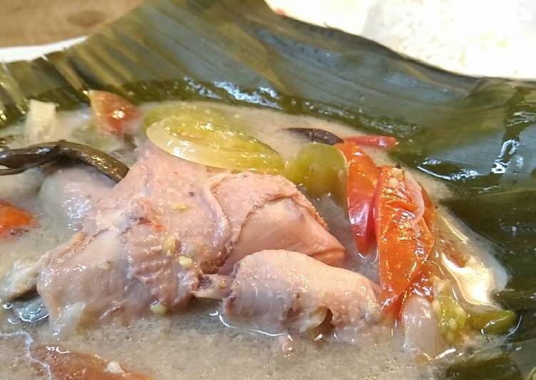
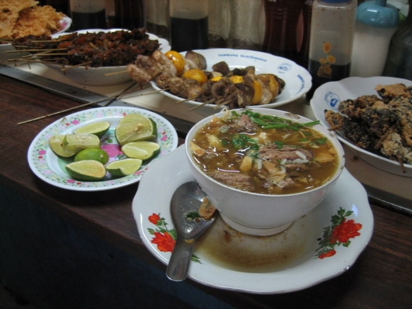
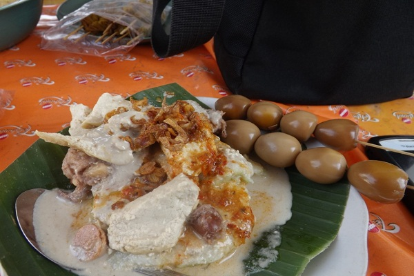
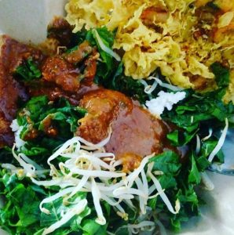
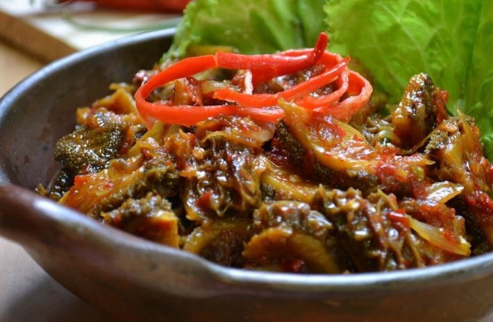

KOTA KUDUS
WISATA DAN KULINER di KOTA KUDUS
Wisata Kuliner Khas Kota Kudus
Berikut adalah 5 Masakan Kuliner khas yang ada di Kota Kudus.
1. Garang Asem
Menyebut garang asem punya dua pengertian. Di Jawa Tengah garang asem merujuk pada hidangan daging berkuah kecokelatan dengan rasa asam segar sedikit manis. Sementara di Kudus garang asem merujuk pada potongan daging ayam kampung yang dibumbui dengan irisan belimbing sayur atau tomat hijau, cabe dan daun salam serta lengkuas.
2. Soto Kudus
Salah satu yang terkenal dari Kudus adalah Soto Kudus, yang bahkan menu makanan ini bisa ditemukan di berbagai daerah lainnya. Tapi, tentu saja rasa yang paling otentik ada di kota ini.
3. Lentog Tanjung Kudus
Bagi orang yang bukan berasal dari Kudus, mendengar nama lentog tentu terasa sangat asing. Lentog adalah perpaduan dari lontong dan sayur tempe serta tahu. Bahan lainnya yang digunakan adalah santan dan juga nangka.
4. Pecel Pakis Colo
Pecel yang satu ini tergolong unik. Salah satu yang membuatnya istimewa adalah sayuran pakis yang digunakan. Adanya satu sayuran ini dan juga olahan bumbu pecel yang sangat kental akan memberikan pengalaman baru dalam menikmati pecel.
5. Ayam Gongso Kudus
Ayam gongso merupakan ayam yang dimasak dengan campuran bumbu kecap dan cabai. Rasanya sudah tentu manis dan gurih serta sedikit pedas, sangat menggugah selera. Ayam gongso selain disajikan dengan nasi putih hangat, bisa juga disajikan bersama dengan nasi goreng.